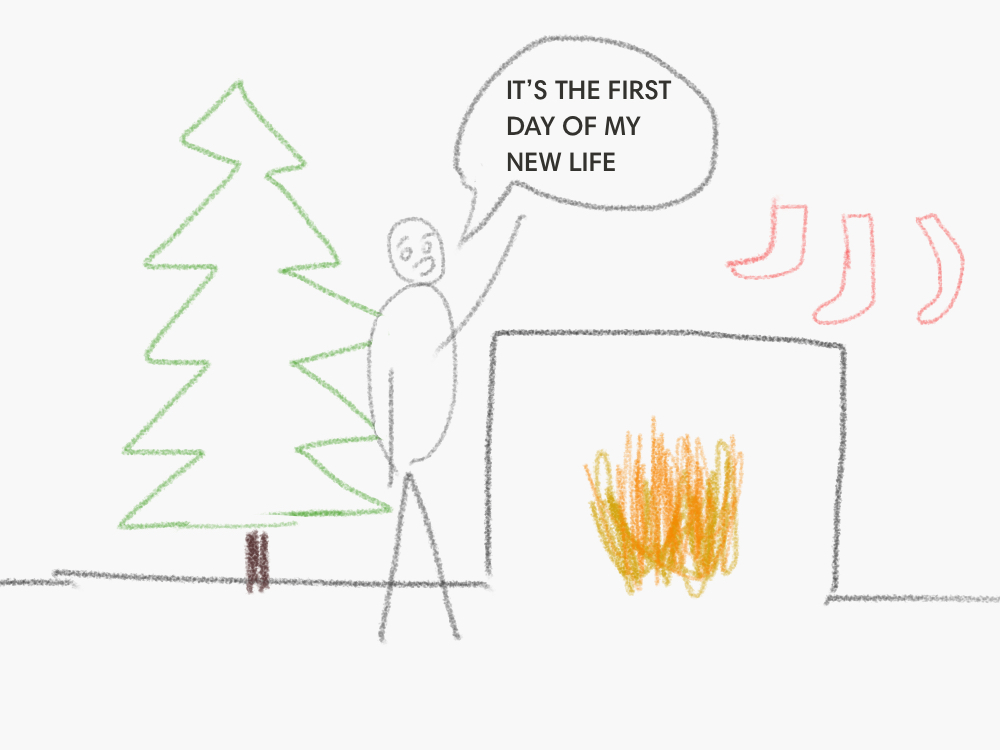
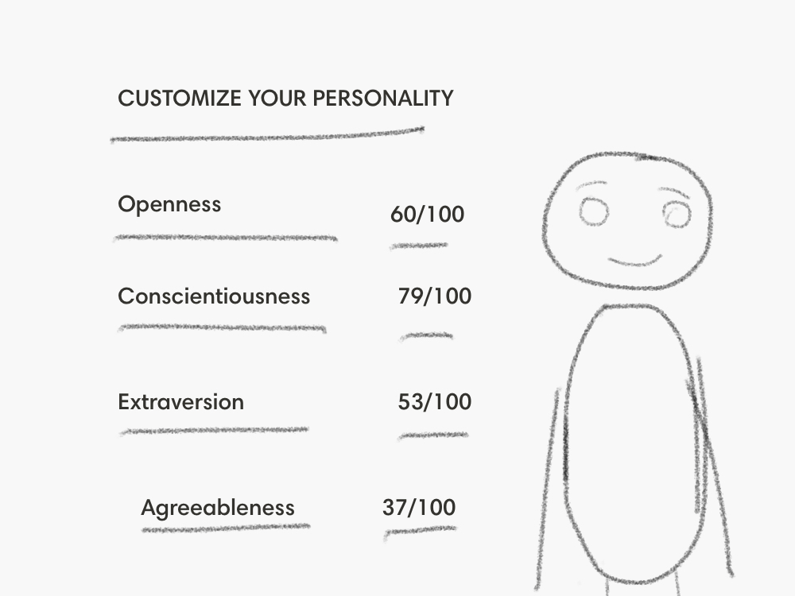
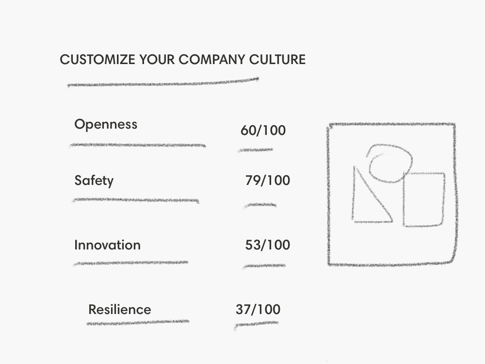
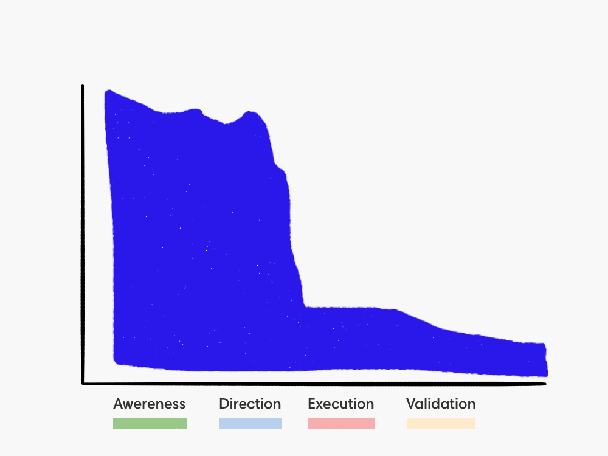
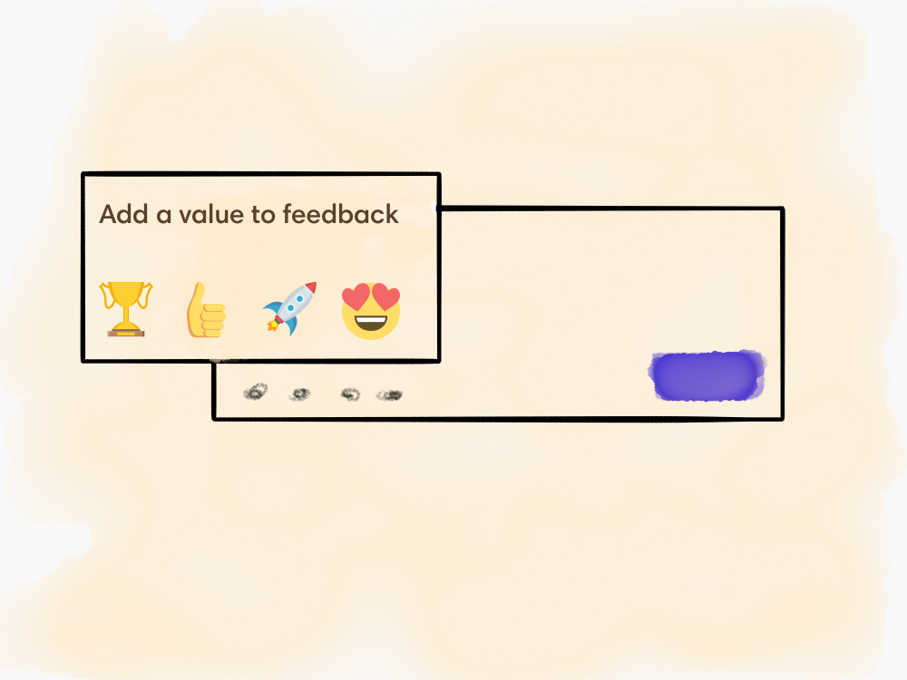

How to change your company culture: a four-step framework

There is an annual tradition that so many of us religiously follow. It happens around the end of December, somewhere in-between Christmas trees, turkey and family gatherings. You take a piece of paper and reflect on the past year. What went well. What could’ve been better.
Suddenly an epiphany hits you. You’re not satisfied with the direction your life is taking. It needs to change. You create a clear plan for reinventing yourself, buy that gym membership and promise to spend more time on your long-term goals. New year, new you.

Fast-forward a month and probably you are back to your old habits. Sustaining change is extremely hard. It’s so hard that we choose to risk premature death rather than change our habits. For example, the long-term success of heart surgeries depends on making healthier lifestyle choices. However, according to a John Hopkins Hospital research, two years after the surgery 90% of people who had it went back to the same lifestyle they had before.
If changing your own behavior is that hard, imagine changing a collective behavior of multiple individuals. Imagine changing company culture.
Why is company culture important?
Even though it can be hard to tangibly define company culture, it’s not much different from other better-understood concepts, for example, human personality.
Your personality is determined by specific traits that describe you as a person. Things like openness to new experiences, or how organized and conscientious you are, or whether you are more of an extrovert or an introvert. Those traits are manifested in your daily behaviors and decisions. If self-actualization is something of value to you, you’ll carve up some time for regular mediation. If you get energized from interactions with lots of people, you’ll find opportunities to socialize more. If you have an agreeable personality, you’ll find it easy to feel compassion and trust towards people around.

Company culture is company’s personality. It’s an unconscious set of assumptions, attitudes and principles which define that particular company and are manifested in daily decisions and behaviors by people there.

Just as how fundamental your personality is for your successes and failures, company culture has a crucial impact on company’s performance. A strong company culture, according to research, is positively correlated with better performance, productivity and profits.
Despite understanding the importance of company culture, most companies don’t have the culture that works well for them. For example, based on a survey by Deloitte, while 87% of people view culture as something important, only 19% of them believe they have the right one. Moreover, another study showed a whopping 96% of respondents saying their company culture needs to change.
Company culture is a fundamental fabric of organization’s existence that directly impacts business results. Getting it right is one of the most fundamental things you can do.
Why is the company culture difficult to change?
Imagine you decide to teach penguins to fly.

You continuously train them, make them flap their wings as fast as they can, push them off the edge. Yet all your hopes are in vain.

Their bodies, formed by millions of years of evolution in a particular environment, are incapable of flying.

For those penguins to learn to fly again, you’ll have to put them into a different environment, that’d require them to adapt over hundreds of generations. And maybe, one day, they’ll fly again.

Just like the penguin’s biology, company culture forms at the company’s inception, the moment co-founders start working together. It frequently mirrors their personality, comfort zone and work style. Moreover, since people tend to hire those who are similar to themselves, the culture is further reinforced by new hires, as well as the behavior of the longest-serving teammates.
Company culture thus is a product of multi-year organic evolution, that for many people in leadership is also tied to their core personal values. All of that makes changing it extremely difficult.
W. Chan Kim and Renee Mauborgne, in their book “Blue Ocean Strategy,” talk about four challenges of changing a culture.
First, there are cognitive challenges – the fact that people need to clearly understand why the change is needed in the first place. Second, resource challenges – changing the company culture will require a shift in people’s attention, capacity for which may not be there. Third, motivation challenges – ensuring that people actually want to make a change. Finally, political challenges – ensuring that systems are designed to support the change.

Because of all those challenges, usually, to even consider company culture change, three things are crucial.
Clear benefits
The culture should not be outright bad or toxic to justify changing it. Sometimes it may simply not serve well in helping the team reach its goals anymore.
Regardless of the reasons, when there is so much friction to instill a change, the benefits of doing it must be glaring.
An external force
Since the company culture usually reflects the personalities and values of the existing team, it may take a challenge from the outside to initiate the change.
It can be new leadership, for example hiring an outsider CEO. It can be a crisis that the company went through, for example a public scandal. Or it can be a paradigm shift in the outside world, like a competitor entering the market with a fundamentally better proposition.
It can be hard to realize you have a problem when the cause for the problem is so entrenched in your team’s established ways of working.
Leadership support
Even the most logical improvement won’t rally everyone around it. So it’s critical to have people with a disproportionate amount of influence onboard.
If you are not a leader and leadership is not keen to change, it will be close to impossible to make a sustainable change. If you are unhappy with the culture and have no leadership support, it may be best for you to find a new job, instead of spending your time in an uphill battle with unclear results.

If you are a leader though (or can convince leadership) and you have a clear understanding why the change is required now and which benefits it’d bring, there is a fair chance of making an impact.
How to change the team culture
Tolstoy’s famous book “Anna Karenina” opens with a sentence “Happy families are all alike; every unhappy family is unhappy in its own way.”
Something similar can be said about companies too. Since every underperforming company has its unique problems, I was expecting a path to cultural transformation to be unique as well.
However, somewhere in the middle of my research, it became clear that almost every company that went through a successful company culture change followed the same four-stage framework:

As long as you do your best on each stage, it’s a process that will lead any team to positive outcomes.
So what do those stages mean? Let’s dive in together.
Awareness: understand what needs changing
Remember that famous Albert Einstein quote: “I would spend 55 minutes defining the problem and then 5 minutes solving it”? Most probably he actually never said it, but it still conveys a very fundamental principle: you can’t solve the problem unless you understand it. That’s the reality of any design work, including organizational design.
Back in the early 2000s Aetna, an insurance giant, was going through turmoil. The company was losing roughly $1 million a day, their customer satisfaction was at the historic low and they experienced executive attrition (going through four consecutive CEOs in just five years).
After John W. Rowe became a new leader, instead of following in the steps of his predecessors who came armed with a clear plan for action that never worked, he started by talking to the team to understand the problems. As a result of those conversations, he was able to learn both the problems and strengths of the existing organizational culture. Armed with that knowledge Aetna was able to evolve.
Over the course of the next five years, those changes led to outstanding results. The company went from a $300 million loss in operating income to a $1.7 billion gain, increased the stock price from $5.84 to $48.40 a share and the majority of teammates started feeling reinvigorated, enthusiastic, and genuinely proud of working there.
Focusing on understanding allows you to uncover diverse perspectives and thus correctly identify the right problem to solve.
There are multiple ways you can do that.
Interviews
In-person interviews are one of the best instruments for a deep understanding of almost any issue. By setting up 1:1 or group chats with your teammates from different departments, actively listening to their feedback and looking out for patterns in their responses, you’ll be able to get clarity about their frustrations and the causes of those frustrations.
It can be hard sometimes to put company culture into words. So try asking specific indirect questions. Things like “What are the things we value here?”, or “What types of people fail in our company?”, or “How would you describe the team’s personality?”.
Surveys
Even though interviews allow you to dig deeper, they are hard to scale. And since culture is impacting the whole company, you want to be as inclusive on the awareness stage as possible. So it might be a good idea to consider using surveys for that.

It’s easy to follow default instincts and put as many questions into those surveys as you can. However, the pain of filling and analyzing those hundred-question surveys would dilute their value. Instead, if you keep your surveys simple (say, one to five questions max), you’ll get a high level of participation even in the most culturally disengaged teams.
Regardless of the survey structure, your insights would be as good as your questions are. So similar to interviews, try asking specific indirect questions. For example, in our product, we encourage people to ask, among many others, questions like “Which company values are we usually not acting according to?”, or “What do you like about our culture?”, or “Which tips would you tell a friend joining your team?”.
Open door policy
Another technique to help you gather feedback is ensuring anyone can come and talk to you.
When Captain D. Michael Abrashoff took command of the USS Benfold in 1997, it was one of the worst performing ships in the US Navy. The team was disengaged, lacking trust and full of conflict.
Realizing he can’t fix things unless he understands the problem first, the new captain showed the team he welcomes their feedback. He established an open door policy. He asked every sailor about one thing he didn’t know. He solicited thoughts and ideas and announced them over the loudspeaker. In just a year’s time, the morale of the crew completely changed and USS Benfold became the highest performing ship in the US Navy.
You don’t need an office to have an open door policy. You just need to show that you are actively seeking feedback, whether by being open to it or by proactively asking for it. Unlocking honest feedback from your team is the fastest way to get to awareness and clarity on your current culture.
Observations
If the level of trust in the company is low, many problems, despite your best efforts, may not come out verbally. People either won’t feel comfortable to talk frankly, or they won’t believe anything would change even if they are honest.
Thus it may be important to also rely on observations of non-verbal clues, for example, paying attention to how people behave and interact with each other. Do they seem friendly and smile or do they feel morose or withdrawn? Do they omit to mention something you think is essential (like customer impact of a decision)? Do they personalize their workstations?
As you go through the above techniques and acquire an understanding of the intricacies of the existing culture, you can start analyzing how to change it. Which brings us to the second stage – deciding what’s the right direction to go.
Direction: decide what you want to change

There is a prevailing lonely hero myth in our collective consciousness. It’s in our books, movies, news articles, the stories we tell. We are used to searching for a charismatic leader, who creates a change solely with the strength of their iron will.
Much more often though a sustainable change is the result of a creation of a movement, rather than an effort of a single person. And those movements are fueled by the shared vision of the future.
Creating a shared vision, which will bring a sense of exhilaration and excitement and help your team better achieve its goals, is the main purpose of the second stage. It’s time to analyze the frustrations, hopes and desires you gathered previously, get ideas for improvements from the team and iterate on those ideas. Usually, it results in two things.
First, creating or updating the core of your company’s belief system – the mission, vision and values. Although principles for creating an effective core belief system deserve a future deep dive of their own, a rule of thumb here is making them actionable, specific, inspiring and rooted in the strength of existing company culture.
Second, identifying key behaviors, you’d want to change. Those are specific shifts (big or small) in the way people act that are easy to emulate.
An example of a small change like that was highlighted in the HBR research where a company found out that a significant source of the team’s frustration was their 360-degree evaluation system. Notably, the results of reviews were often surprising to people. In response, leadership introduced a simple behavioral change – they started asking people if they have ever given feedback to a teammate they were reviewing. That tiny change showed that the company valued regular feedback and led to an increase in the constructive criticism that people shared with each other continuously.
With clarity around where you’re going, it’s finally time for the changes you planned to meet the reality. That’s where it gets really hard.
Execution: implement the change

You probably heard a phrase that a great plan means nothing without execution. It’s more than accurate in this case.
If I am to illustrate the chart of culture change initiatives, that’s the stage where 90% of them fails.

Those who succeed usually follow these steps.
Align behaviors of the leaders
Regardless of how much we may prefer not to be hierarchical, psychologically we are. We naturally look up to people who lead us (whether they are situational or formal leaders).
When initiating a cultural transformation, one of the first things most people will start paying attention to is how aligned behaviors of executives and managers are with new principles. So leaders need to lead the change by changing their own behaviors first.
It can’t be just verbal support – they need to be the first to embrace the new company culture. And if, for some reason, a leader makes a decision that contradicts the new behaviors, they need to own up to that and approach it transparently and proactively. It’s naive to expect everyone on the team behave in the desired way while making exceptions for the leaders.
When Dr. Reddy’s, a global pharmaceutical giant, tried to change its culture to be more nimble, innovative and patient-centered, they started using new values to guide decisions of the leadership team, even before they shared those values with a broader organization.
Usually, that’s how social movements start – they galvanize the small group of early supporters who achieve first small wins using the new approach, which in turn leads to more people realizing its value and joining in. For Dr. Reddy’s that worked particularly well. In some cases, it led to decrease in time from project start to completion from multiple months to a fortnight.
Highlight the importance of the mission, vision and values
The newly minted mission, vision and values need to internalize with people.

Talk about them in meetings. Put posters on the walls. Print out employee handbooks. Use them to make decisions. Focus the feedback you give to each other around them.
For example, when Ritz-Carlton was struggling with a performance of the stuff at its hotel, they introduced a culture section during the daily lineup – for a few minutes they discussed one of the values or standards, with the meeting led by a different employee every time. Over an extended time that created a lot of reinforcement of those ideas, without getting too repetitive.
Highlighting the company’s mission, vision and values creates a deep empathy for those principles so that after a while they’re subconsciously applied in the decision-making process.
Celebrate desired behaviors
Talking about values and behaviors doesn’t mean much unless corresponding actions reinforce them. Connecting the desired behaviors to your recognition process can be a good way to start.
When GM was emerging from bankruptcy back in 2010, they wanted to promote risk-taking and the open exchange of ideas. To reinforce them one team started giving each other “gold star” stickers to praise people who exhibited those values. An initiative quickly spread across many other teams helping the company to change its culture.
Alternatively or on top of that, you can also introduce a regular all-hands meeting (or make it a section in your existing one) to share praise for teammates who exhibited those behaviors. You can create special recognition awards (they don’t have to be monetary). You can run regular surveys to ask about people who made decisions based on the values. Or you can start using dedicated tools that allow to connect feedback to specific values or behaviors (that’s what we do here at Teambit).

The goal behind celebrating those behaviors is to show people actual examples of values being applied well in the real world. That’s the level of reinforcement no poster can do.
Coach your team
Another way to internalize the changes is through 1-on-1 or group coaching. Coaching can help your team to analyze their work according to new behaviors and values and understand how to apply them.
Andy Grove, Intel’s founder, in his book High output management, pointed out that coaching is the highest impact activity a manager can do. For example, if after spending 12 hours training 10 teammates their productivity would improve by 1%, a manager would effectively increase total output by 200 hours (given that each teammate works 2000 hours a year).
It’s especially true when going through the cultural change. Coaching can help people be more aware of the changes and help them learn how to apply new practices in their work.
Hire, onboard, promote and fire people to reinforce the values
Cultural change ripples through all of the company processes, but your core people decisions should reflect it the most.
First, it means you need to look for desired values and behaviors in people who go through your hiring pipeline and take that into account when making decisions.
Second, when people do join you need to invest in their onboarding and coaching to align them closer to your culture.
Third, your team needs to understand that exhibiting the new behaviors and values is essential not just for the organizational success, but also for their own growth and development. Which means that the new company culture should be woven into the performance management process. And thus people who are promoted should be an embodiment of those values at best and not obstructors at least.
Fourth, when it comes to people who don’t align with the new culture and don’t want to change, the best thing both for the company and themselves might be to part ways. It doesn’t mean you don’t give warnings or don’t help them transform and embrace the new organizational culture. Yet unless firm actions are taken against those who repeatedly obstruct the culture, those teammates will eventually undermine the change.
For example, Jeff Bezos, in an attempt to change Amazon’s culture gave a clear mandate to fire those who don’t embrace it.
People processes are core in determining who joins the company, how they get onboarded and how their performance is evaluated. There is no better way to highlight the importance of changes than by making new values and behaviors an integral part of all of that.
Review the company structure
Sometimes to change things for the better a bigger change is needed. For example, changing the whole structure of the company.
When Robert McNamara became a President of the World Bank in 1968, as part of the cultural change he initiated a reorganization to support the new culture and management systems (which transformed the institution from a small financial boutique to a global corporation).
An existing structure may bluntly not work, for example when several teams are competing over the ownership of a particular area of the product, leading to conflicts, diffusion of responsibility and a very hostile company culture.

Or problems may exist just on the level of particular teams, for example when there is a large number of them is underperforming.
In either case, it’s good to consider switching up those teams (especially the underperforming ones) to break people out of their sub-optimally working routines and habits.
Finally, as you do the things above and keep consistently executing to make a new culture a habit, it’s time to reflect and validate whether or not your changes need changing.
Validation: cultivate and measure the change

In my earlier years as a designer, I often defaulted to thinking that the moment we release a new feature to users, my job was done. Time to move on to a new shiny challenge.
The truth is, the moment you release the feature is usually a beginning of a new phase of the journey. That’s the moment you find out how effective your solution is at fixing the problem.
It’s similar when changing company culture. Following all the previous stages is not a guarantee you got it right. Usually, you need to put clear metrics to understand how successful new culture is, find the patience to give the change you instilled time and iterate if there are things you missed or got wrong.
Measure the success of all the changes
Have you ever actively tried to lose or gain weight? How did you go about it? Many dietary experts agree that keeping a close eye on your calorie intake, types of food you consume and training you do as well as regularly measuring your actual weight usually are a pre-requisite for a sustainable change. It’s hard to progress unless you establish a feedback loop about the change process.
Unlike the weight, company culture is seen by many as something intangible, something that’s hard to put a fixed metric on. That shouldn’t be the case.
First, cultural change will almost certainly have an impact on overall business KPIs – like revenue or customer growth.
Second, many cultural changes can be connected to specific numbers. For example, if the goal of the transformation is to make the company more customer-centric, you can quantify it by measuring the customer success score for support and sales conversations.
Third, you can rely on internal indicators, for example, feedback from the team (gathered in person or via regular surveys) or the amount of praise teammates give each other about exhibiting new values and behaviors.
Rigorous measurement is crucial for a sustainable change. It will not only demonstrate evidence of improvements to maintain the positive momentum, but it will also help understand whether the changes are being adopted, whether they make a difference, whether there is backsliding or whether there are things that need to be improved.
Sustain
We’ve already mentioned how bad we are at sticking to changes, so it’s important to have correct expectations going into cultural transformation. The hardest part about change is sustaining it.

Your metrics probably won’t drastically improve right away. Not everyone on your team will gladly adopt the changes. Yet as long as you rally everyone around the new behaviors, gradually you’ll start seeing improvements.
Despite how crucial sustaining change is, it’s important not to be blindsided by it. Listen to the feedback from the team, and if the change continuously raises concerns, it should be iterated on.
At the end of the day, you didn’t start a process of cultural change to end up with a different culture that still doesn’t work.
A cycle, not a line
If you look at those four stages at a higher level, you realize they can be applied to more than changing company culture. It’s a recipe for any change.
First, on the stage of awareness, you understand the problem. Second, on the stage of direction, you gain clarity about where you want to go. Then, on the stage of execution, you implement those changes. Finally, on the stage of validation, you ensure that the change makes sense and is taking hold.
And that’s when it becomes clear that this four-stage framework is not a line.
It’s a cycle.

There is no hard stop. Most probably, on the stage of validation, you will realize you were wrong somewhere. Perhaps some of the new behaviors are impossible to uphold. Perhaps those behaviors didn’t lead to the desired results. Perhaps after a while, things have fundamentally changed and now you need a new set of principles. Regardless of the reason, at some point, you’ll need to go back to the first stage to understand new problems and search for new solutions.
Change is hard. It requires effort. So despite problems, it can be tempting to maintain the status quo. Yet avoiding the pain of changing by ignoring problems is not a way to solve them. Those problems won’t go away. Your people, your company and you deserve better.